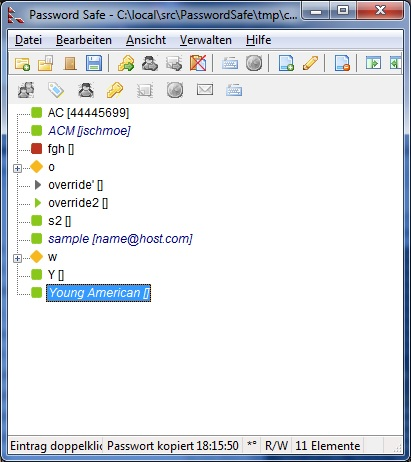
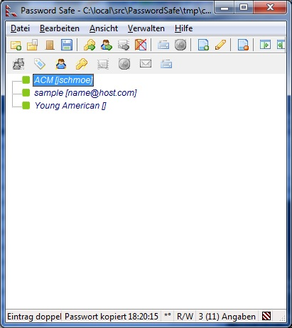

Das Menü Ansicht kontrolliert die vorhandenen Anzeigemöglichkeiten. Sie können umschalten zwischen den verschiedenen Darstellungsarten, wie Benutzernamen und Passwörter eines Eintrages dargestellt werden: entweder als einfache Tabelle oder als Baumstruktur. Sie können wählen ob Sie die Toolleiste anzeigen oder nicht, und wenn ja, ob Sie die klassische oder die moderne Darstellung verwenden wollen. Die Toolleiste selber kann angepasst werden. In der Baumdarstellung kann alles ausgeklappt werden, oder zugeklappt. Die Einträge können gefiltert werden nach irgendwelchen Kriterien. Die Schriftart für die Anzeige kann ausgewählt werden. Berichte zum Zusammenführen (merge), Vergleichen, Importieren und andere erweiterte Operationen können ebenfalls dargestellt werden.
Hinweis:Es scheint ein Problem zu bestehen beim Einsetzen der neuen Autom. Eingabe in der Dragleiste mit dem Internet Explorer (getestet mit V7, V8 & V9): alle Zeichen vor dem ersten Tabulator gehen verloren. Dies passiert NICHT beim Firefox und Chrome Browser. Obwohl wir dafür eine Lösung haben (wir senden TAB und Shift-TAB, um zum ausgewählten Fenster zurück zu kehren, aber nur aus der Dragleiste), funktioniert dies (als unschöne Nebenerscheinung) nur beim Ersetzen eines bereits vorhandenen String im Eingabefeld. Wenn ins Fenster einer andere Anwendung gezogen wird, wird das Endergebnis davon abhängen wie diese Anwendung mit TAB und Shift-TAB umgeht.
Um die Dragleiste anzuzeigen bzw. zu verbergen, markieren Sie das Element Dragleiste sichtbar oder nicht.
Folgende Symbole sind in der Dragleiste vorhanden:
Klappt alle Gruppen aus, sodass sämtliche Einträge sichtbar sind. (nur in der Baumstruktur).
Klappt alle Gruppen zu (nur in der Baumstruktur).
Durch Betätigen der Taste F5 oder durch Drücken dieses Menüpunktes kann die Anzeige der vorhandenen Daten aktualisiert werden.
Wenn das Feld "Datenbank sofort nach Bearbeiten oder Einfügen speichern" in den Verwalten → Optionen → Sicherungen nicht markiert ist, werden die geänderten Felder nicht sofort abgespeichert, sondern farblich gekennzeichnet. Siehe hierzu auch das nächste Bild:

Die Übersicht mit allen Einträgen
Durch Markieren dieses Menüpunktes werden -zur Übersicht- ausschließlich die geänderten Felder angezeigt.

Die Übersicht, ausschließlich der geänderten Einträge.
Bemerkung: Solange überhaupt geänderte aber noch nicht abgespeicherte Einträge vorhanden sind, erscheint in der Statuszeile ein "*".
Durch Markieren dieses Menüpunktes werden -zur Übersicht- ausschließlich die Einträge angezeigt, die ein Ablaufdatum haben.
Wenn gar keine Einträge mit Ablaufdatum vorhanden sind, ist dieser Menüpunkt ausgegraut.
Wählen Sie eine andere Schriftart aus, um Einträge in der Tabellenansicht oder Baumstruktur darzustellen. Dies gilt ebenso für die Darstellung der Passwörter im Menü Einfügen bzw. Bearbeiten.
Sie können ebenfalls die Schriftart für die virtuelle Tastatur festlegen. Achten Sie darauf das diese Schriftart Unicode Zeichen darstellen können muss. Die unterstützte Schriftarten sind: "Arial Unicode MS" (kommt mit Microsoft's Office suite), "Arial Unicode" und "Lucida Sans Unicode". Sie können aber auch eine andere Schriftart auswählen mit dem angebrachten Menüpunkt.
Wenn Sie die Berichte vom Vergleichen, Exportieren, Importieren, Zusammenführen und Synchronisieren auf Festplatte abspeichern, werden sie im selben Verzeichnis wie die Datenbank abgespeichert. Bei wiederholten Aktionen und nochmaligem Abspeichern auf Festplatte, wird der alte Bericht unweigerlich überschrieben. Die Berichte können zu einem späteren Zeitpunkt eingesehn werden, solange die Datenbank im selben Verzeichnis steht.